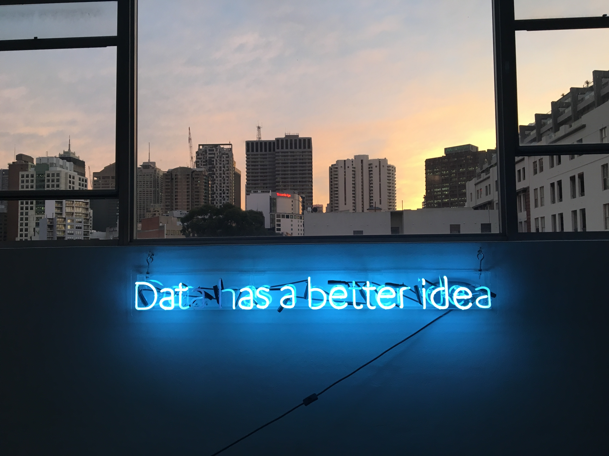
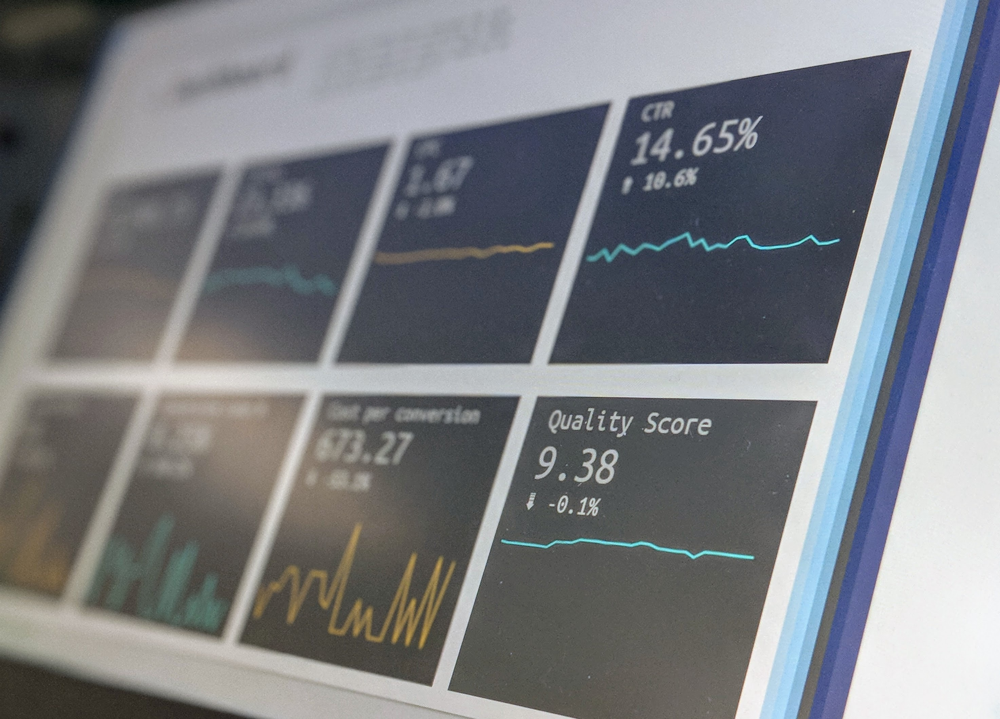

This is a visualization report created in Power BI where the dataset Adventure Works is analysed. Click the link below to have access to the .pbix file where it can be downloaded and explored further in Power BI.
This is a Data Analysis Project that consists in looking at Stock Market data and performing some analysis through visualization techniques in Python.

This is a ficticious database created, using MySQL engine, to simulate a real stadium located in Brazil. The business requirements and project goals are described in detail in the project's page.

In this project we have real state listing data from Brazil. The dataset contains almost a million rows. The goal for this project is to do pre-processing only, to have the file ready for processing later.
This is an analysis project based on data from the 2012 election. We'll analyze 2 datasets, one with the results of political polls, and the other one with donations.
This is a simplified version of a blackjack game. There is only one player and the dealer. The player has to decide to hit until it gets as close as he can to 21, or he can stand. The dealer is going to hit until he gets 21 or close enough. The player is going to be prompted to bet chips, and when the game is done, the result will be shown considering the initial chips and the ones he bet.